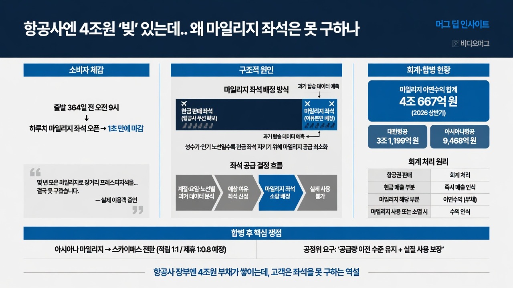

https://www.youtube.com/@videomug0MORNING DIGEST · 2026-08-25 · https://www.youtube.com/@videomug0🎬 영상
항공사엔 4조원 '빚' 있는데.. 왜 마일리지 좌석은 못 구하나 / 머그 딥 인사이트 / 비디오머그

01핵심 개요
항목
내용
채널
비디오머그(VIDEOMUG), '머그 딥 인사이트' 코너
주제
대한항공·아시아나 마일리지 부채 4조원과 마일리지 좌석 구하기 어려움의 구조적 원인
핵심 수치
마일리지 이연수익 합계 약 4조 667억 원(2026년 상반기 기준, 대한항공 3조 1,199억 원 + 아시아나 약 9,468억 원)
핵심 메시지
마일리지는 회계상 '부채'로 쌓이지만, 항공사가 마일리지 좌석 공급량을 스스로 결정하기 때문에 고객이 실제로 쓸 수 있는 권리는 항공사 재량에 달려 있다
배경 이슈
대한항공·아시아나 양사 합병을 앞두고 아시아나 마일리지 처리 방안이 공정거래위원회 심사 대상
러닝타임 기준 주요 구간
도입(0:00~), 소비자 사례(0:47~), 배정 구조(1:42~), 회계 원리(2:52~), 공시 수치(3:36~), 합병 후 처리(4:23~)
02핵심 기능/내용 구조
영상은 크게 세 블록으로 구성된다.
① 소비자 체감 문제 제기: 마일리지를 몇 년간 모은 이용객이 장거리 프레스티지석(비즈니스석급) 예약을 시도했으나 실패한 사례를 인터뷰로 제시한다. (0:47) "출발 364일 전 오전 9시에 하루치 좌석이 열리는데, 열리자마자 1초도 안 돼 마감된다"는 증언이 핵심이다. (1:06)
② 구조적 원인 분석: 마일리지 좌석은 일반 항공권 좌석과 별도로 배정되며, 항공사는 과거 탑승 데이터를 근거로 계절·요일·노선별 여유 좌석 예측치만큼만 마일리지 좌석으로 내놓는다. 성수기·인기 노선일수록 현금 판매 좌석을 지키려는 유인이 커져 마일리지 좌석은 더 희소해진다. (2:05)
③ 회계·제도 구조 설명: 항공권 판매 대금 중 마일리지에 해당하는 부분은 즉시 매출로 잡지 못하고 '이연수익(부채성 항목)'으로 회계 처리된다는 원리, 그리고 대한항공-아시아나 합병에 따른 마일리지 통합·전환 방안과 공정위 심사 이슈를 다룬다. (3:36)
03산업·구조적 맥락
회계 원리: 항공사가 100만 원짜리 항공권을 팔면, 이미 제공한 운송 서비스분만 즉시 매출로 인식하고, 고객이 나중에 마일리지로 청구할 항공권·좌석 승급분은 '이연수익'으로 미뤄둔다. 마일리지가 사용되거나 유효기간 만료로 소멸되면 그제야 수익으로 반영된다. (2:52)
부채 증가 메커니즘: 마일리지를 많이 발행하고 고객이 사용하지 않을수록 항공사 장부상 부채(이연수익)는 계속 커진다. 즉 고객 입장의 '쓸 수 있는 권리'가 항공사 입장에서는 '아직 이행하지 않은 약속'으로 누적된다.
공시 수치 추이: 금융감독원 전자공시 기준 2026년 상반기 마일리지 이연수익은 대한항공 3조 1,199억 원, 아시아나항공 약 9,468억 원으로, 국내 항공사 마일리지 제도 도입 이후 양사 합계 최초로 4조원을 넘어섰다. 해외여행 수요 회복으로 마일리지 적립은 늘었지만 사용 속도는 이를 따라가지 못했고, 합병을 앞두고 아시아나 마일리지 처리 방향을 결정하지 못한 채 보유만 하는 고객도 많은 것으로 분석된다. (3:39)
좌석 배정 관행: 아시아나항공은 과거 탑승 데이터를 분석해 계절·요일·항공편별로 마일리지 좌석 수를 다르게 책정하며, 출발 시점에 남을 것으로 예상되는 여유 좌석만 미리 마일리지 좌석으로 배정한다고 밝혔다.
합병 규제 이력: 대한항공은 기업결합(합병) 조건으로 약속했던 인천-프랑크푸르트 노선 공급 좌석 기준을 지키지 않아 최근 64억 원 넘는 이행강제금을 부과받은 전례가 있다(마일리지 좌석이 아닌 전체 좌석 기준 제재이지만, 통합 후 마일리지 실질가치도 결국 공급 좌석 수에 달려 있음을 보여주는 사례). (6:26)
04전략적 의미
소비자 관점: 마일리지는 화폐처럼 쌓이지만 화폐처럼 아무 데서나 쓸 수 없다. 사용처·유효기간·필요 마일리지 수·좌석 공급량을 모두 발행 주체(항공사)가 결정하는 비대칭 구조다.
합병 후 리스크: 통합 대한항공이 출범하면 고객이 보유한 4조원 규모의 마일리지 권리를 사실상 한 회사가 독점 관리하게 되므로, 원할 때 실제 항공권으로 전환 가능한지, 가치가 유지되는지가 핵심 쟁점이 된다.
전환 비율의 함정: 기존 아시아나 마일리지를 스카이패스로 전환 시 탑승 적립은 1대 1, 제휴 적립은 1대 0.8 비율이 적용될 예정이나(공정위 최종 승인 전), 전환 비율이 1대 1이어도 마일리지로 살 수 있는 좌석이 부족하거나 필요 마일리지가 늘어나면 소비자 체감 가치는 그만큼 하락한다. (5:23)
공정위의 판단: 대한항공은 기존 아시아나 마일리지로 이용 가능한 보너스 항공권·좌석 승급 공급량을 기업결합 이전 수준 이상으로 유지하겠다는 방안을 제시했지만, 공정위는 "공급 기준과 관리 방식, 실질적 사용 보장 방안이 불충분하다"며 보완을 요구했다.
05핵심 논리 전개
문제 제기: 항공사 장부엔 4조원어치 마일리지(약속)가 쌓여 있는데, 정작 쓰려는 고객은 좌석을 구하지 못하는 역설이 존재한다.
원인 1 (배정 구조): 마일리지 좌석은 일반석과 분리 배정되고, 항공사가 과거 데이터로 예측한 '여유분'만 내놓기 때문에 인기 노선·성수기엔 공급이 절대적으로 부족하다.
원인 2 (회계 유인): 마일리지를 부채(이연수익)로 처리하는 회계 구조상, 항공사는 현금 매출을 우선 지키려는 유인을 가지므로 마일리지 좌석을 적극적으로 늘릴 경제적 동기가 약하다.
증폭 요인 (합병): 대한항공-아시아나 합병으로 두 회사의 마일리지 부채와 이용자 기반이 한 회사로 합쳐지면서, 기존 아시아나 마일리지 보유자의 불안(전환 비율, 좌석 공급 유지 여부)이 새로운 리스크로 추가된다.
결론: 통합 대한항공의 첫 평가 기준은 항공기 대수나 노선 규모가 아니라, 고객에게 진 4조원의 약속(마일리지)을 얼마나 온전히 지키느냐가 될 것이라고 전망한다. (9:12)
06활용 시나리오
마일리지 보유자의 좌석 예약 전략 수립: 장거리 프레스티지석 등 인기 좌석은 출발 364일 전 특정 시각(예: 오전 9시)에 하루 단위로 열리며 초 단위로 마감되므로, 예약 오픈 시각을 미리 파악하고 동시 다발적 시도(여러 회선·기기)를 준비하는 참고 자료로 활용.
아시아나 마일리지 보유자의 의사결정: 합병 이후에도 기존 아시아나 마일리지는 10년간 별도 운영되고 유효기간이 자동 연장되지 않는다는 점을 근거로, 스카이패스 전환 여부를 공정위 최종 승인 내용 확인 후 결정하도록 돕는 판단 자료.
소비자 저널리즘·시사 상식 학습: 항공사의 '이연수익' 회계 처리 개념을 실생활 사례(마일리지)로 이해하는 경제 교육 자료로 활용.
항공사 합병·기업결합 감시 사례 연구: 공정위가 기업결합 승인 조건 이행 여부를 어떻게 심사하고 제재하는지(인천-프랑크푸르트 노선 이행강제금 사례)를 보여주는 규제 사례로 참고.
07현황 및 전망
현재 상태: 2026년 상반기 기준 대한항공·아시아나 마일리지 이연수익 합계가 사상 처음 4조원을 돌파했으며, 대한항공이 공정위에 제출한 아시아나 마일리지 처리 방안(10년 별도 운영, 스카이패스 전환 시 1대 1/1대 0.8 비율)은 아직 공정위 최종 승인 전 단계다.
쟁점: 공정위는 대한항공이 제시한 '공급량 기업결합 이전 수준 이상 유지' 방안만으로는 부족하다고 보고, 구체적 공급 기준·관리 방식·실사용 보장 방안 보완을 요구한 상태다.
전망: 통합 대한항공 출범 이후에도 마일리지 조건이 기존보다 불리해질 경우 시정조치 위반에 해당할 수 있어, 향후 공정위의 최종 승인 내용과 합병 후 실제 마일리지 좌석 공급 추이가 4조원 약속의 실질 이행 여부를 가늠하는 핵심 지표가 될 전망이다. 영상은 통합 대한항공의 성패를 "항공기 숫자나 노선 규모가 아니라 고객에게 진 4조원의 약속을 얼마나 지키느냐"로 요약한다.